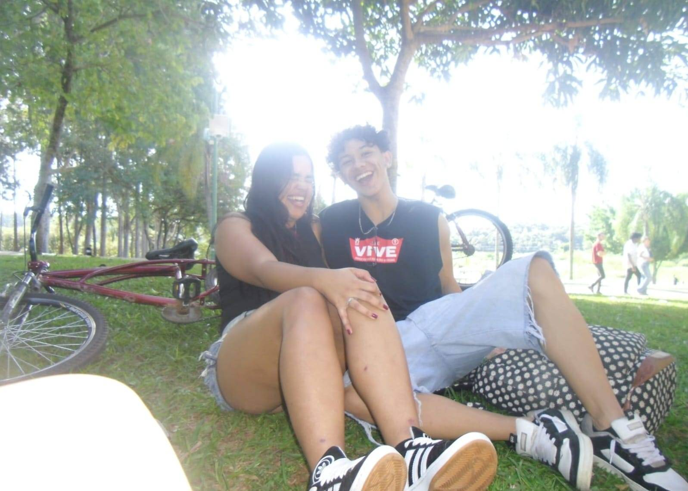
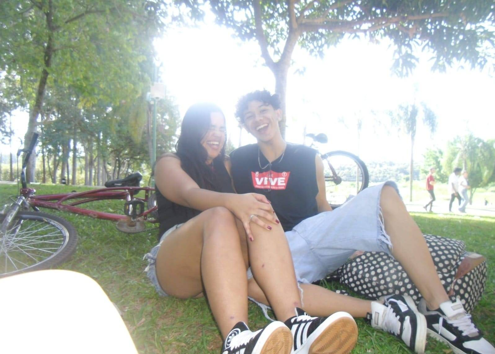

Oioi meu amor só queria te dizer que eu te amo muito tá?, dizer que você é muito especial para mim
e que você é a pessoa mais incrível que eu já conheci, sou muito sortudo de ter você comigo e sou muito feliz ao seu lado, obrigado por me aguentar todos os dias você faz minha vida muito mais feliz.
Obrigado por tudo meu amor EU TE AMO MUITOOOOOOOO!!!❤️🐈⬛
 
